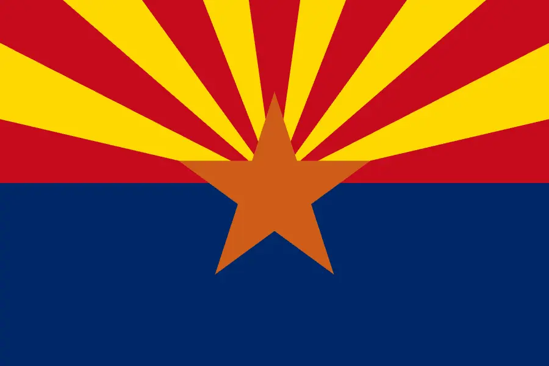

About Me
My name is Connor Neus. I was born and am living in Gilbert,AZ. i am currently working as a property manager at a storage facility. It is member owned so they know i am going to school there. i love to play video games and watch football and basketball. I am an uncle of 3 and i love being one! They are a boy (4), girl (2), and girl (4 months). i absulotely love them all! I used to play footbll and volleyball. i was an offensive tackle for football and a libero for volleyball (as i was the shortest one on the team).
Gilbert, AZ - United States

Arizona is the 48th state of the U.S., admitted on February 14, 1912, and lies in the American Southwest, bordering California, Nevada, Utah, Colorado, New Mexico, and Mexico’s Sonora. The state’s terrain ranges from the low Sonoran Desert to alpine forests and peaks over 12,600 ft, and includes iconic sites like the Grand Canyon and Saguaro National Park. More than 7 million people call Arizona home, with large Native American communities (Navajo, Hopi, Apache) and a significant Hispanic population. Its climate is generally arid to semi‑arid, featuring scorching summers and brief, intense monsoon storms, alongside mild winters in lower elevations. Key industries include high‑tech manufacturing, aerospace, copper mining, tourism, and agriculture (notably cotton and citrus). Arizona’s rich cultural blend of Native American, Hispanic, and frontier heritage shines through its art, cuisine, festivals, and abundant outdoor recreation opportunities, from hiking and rafting to winter skiing.